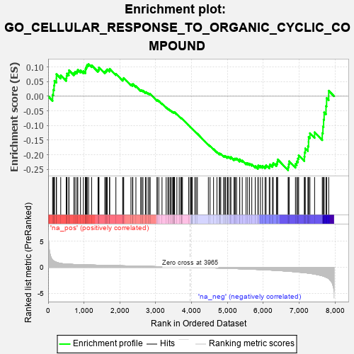
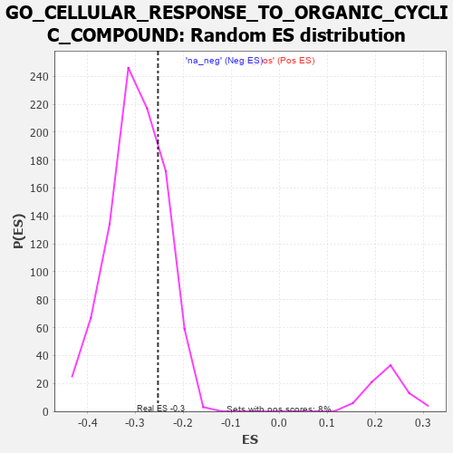

| | | Dataset | 7d |
| Phenotype | NoPhenotypeAvailable |
| Upregulated in class | na_neg |
| GeneSet | GO_CELLULAR_RESPONSE_TO_ORGANIC_CYCLIC_COMPOUND |
| Enrichment Score (ES) | -0.2530098 |
| Normalized Enrichment Score (NES) | -0.849629 |
| Nominal p-value | 0.7659805 |
| FDR q-value | 0.9806673 |
| FWER p-Value | 1.0 |
Table: GSEA Results Summary

Fig 1: Enrichment plot: GO_CELLULAR_RESPONSE_TO_ORGANIC_CYCLIC_COMPOUND
Profile of the Running ES Score & Positions of GeneSet Members on the Rank Ordered List
| PROBE | GENE SYMBOL | GENE_TITLE | RANK IN GENE LIST | RANK METRIC SCORE | RUNNING ES | CORE ENRICHMENT | | 1 | ADCY8 | | | 124 | 1.418 | 0.0054 | No |
| 2 | CASP6 | | | 145 | 1.300 | 0.0223 | No |
| 3 | AXIN1 | | | 166 | 1.159 | 0.0371 | No |
| 4 | FOXF1 | | | 176 | 1.136 | 0.0530 | No |
| 5 | UFSP2 | | | 230 | 0.981 | 0.0609 | No |
| 6 | SMAD5 | | | 231 | 0.979 | 0.0756 | No |
| 7 | GSK3A | | | 351 | 0.745 | 0.0715 | No |
| 8 | MYOD1 | | | 504 | 0.628 | 0.0615 | No |
| 9 | CNOT2 | | | 514 | 0.625 | 0.0697 | No |
| 10 | RWDD1 | | | 526 | 0.621 | 0.0776 | No |
| 11 | APEX1 | | | 577 | 0.604 | 0.0803 | No |
| 12 | CCNB1 | | | 581 | 0.601 | 0.0889 | No |
| 13 | ID1 | | | 719 | 0.555 | 0.0797 | No |
| 14 | ELK1 | | | 752 | 0.545 | 0.0838 | No |
| 15 | BLM | | | 804 | 0.531 | 0.0852 | No |
| 16 | RAE1 | | | 827 | 0.524 | 0.0902 | No |
| 17 | HCFC1 | | | 902 | 0.506 | 0.0884 | No |
| 18 | UBA5 | | | 982 | 0.488 | 0.0856 | No |
| 19 | AKT1 | | | 1040 | 0.476 | 0.0854 | No |
| 20 | YAP1 | | | 1041 | 0.475 | 0.0925 | No |
| 21 | MEF2C | | | 1054 | 0.473 | 0.0981 | No |
| 22 | AIFM1 | | | 1072 | 0.469 | 0.1029 | No |
| 23 | RAD51 | | | 1090 | 0.466 | 0.1077 | No |
| 24 | SRC | | | 1128 | 0.459 | 0.1099 | No |
| 25 | KCTD6 | | | 1213 | 0.444 | 0.1058 | No |
| 26 | FKBP4 | | | 1390 | 0.412 | 0.0895 | No |
| 27 | CARM1 | | | 1413 | 0.408 | 0.0928 | No |
| 28 | P2RY1 | | | 1416 | 0.407 | 0.0986 | No |
| 29 | TADA3 | | | 1580 | 0.378 | 0.0835 | No |
| 30 | RNF6 | | | 1605 | 0.373 | 0.0860 | No |
| 31 | CDK4 | | | 1626 | 0.370 | 0.0890 | No |
| 32 | RXRA | | | 1647 | 0.365 | 0.0919 | No |
| 33 | DDX18 | | | 1711 | 0.355 | 0.0892 | No |
| 34 | KDM5D | | | 1716 | 0.353 | 0.0939 | No |
| 35 | PAK3 | | | 1889 | 0.322 | 0.0768 | No |
| 36 | KDM3A | | | 2078 | 0.294 | 0.0572 | No |
| 37 | TAF7 | | | 2092 | 0.292 | 0.0599 | No |
| 38 | BMP7 | | | 2107 | 0.290 | 0.0625 | No |
| 39 | REST | | | 2308 | 0.259 | 0.0408 | No |
| 40 | CDC5L | | | 2353 | 0.253 | 0.0389 | No |
| 41 | SIN3A | | | 2361 | 0.251 | 0.0418 | No |
| 42 | KDM1A | | | 2447 | 0.237 | 0.0345 | No |
| 43 | PIAS2 | | | 2581 | 0.215 | 0.0207 | No |
| 44 | PDE12 | | | 2608 | 0.211 | 0.0206 | No |
| 45 | KAT5 | | | 2644 | 0.206 | 0.0192 | No |
| 46 | PHB2 | | | 2712 | 0.197 | 0.0136 | No |
| 47 | RORA | | | 2730 | 0.193 | 0.0143 | No |
| 48 | XRN1 | | | 2786 | 0.185 | 0.0101 | No |
| 49 | PCK2 | | | 2823 | 0.180 | 0.0082 | No |
| 50 | NR2E1 | | | 2844 | 0.177 | 0.0083 | No |
| 51 | LEF1 | | | 3037 | 0.144 | -0.0141 | No |
| 52 | UFL1 | | | 3041 | 0.144 | -0.0123 | No |
| 53 | HDAC1 | | | 3086 | 0.138 | -0.0159 | No |
| 54 | AHR | | | 3175 | 0.126 | -0.0252 | No |
| 55 | TRIP4 | | | 3290 | 0.107 | -0.0382 | No |
| 56 | SMAD1 | | | 3337 | 0.099 | -0.0426 | No |
| 57 | EPG5 | | | 3368 | 0.094 | -0.0450 | No |
| 58 | MED1 | | | 3405 | 0.089 | -0.0483 | No |
| 59 | RXRG | | | 3435 | 0.085 | -0.0507 | No |
| 60 | CNOT1 | | | 3473 | 0.081 | -0.0542 | No |
| 61 | RGS8 | | | 3490 | 0.079 | -0.0551 | No |
| 62 | FES | | | 3501 | 0.077 | -0.0552 | No |
| 63 | UFM1 | | | 3506 | 0.077 | -0.0546 | No |
| 64 | UBR5 | | | 3518 | 0.074 | -0.0549 | No |
| 65 | PQBP1 | | | 3526 | 0.072 | -0.0547 | No |
| 66 | MAPK3 | | | 3589 | 0.062 | -0.0617 | No |
| 67 | FIS1 | | | 3654 | 0.051 | -0.0691 | No |
| 68 | DHX9 | | | 3693 | 0.044 | -0.0733 | No |
| 69 | HSF1 | | | 3718 | 0.039 | -0.0758 | No |
| 70 | DAXX | | | 3722 | 0.038 | -0.0756 | No |
| 71 | HTR1B | | | 3745 | 0.035 | -0.0779 | No |
| 72 | IFIH1 | | | 3919 | 0.006 | -0.0999 | No |
| 73 | NCOR1 | | | 3961 | 0.000 | -0.1051 | No |
| 74 | VPS35 | | | 3989 | -0.006 | -0.1084 | No |
| 75 | DDX58 | | | 3998 | -0.007 | -0.1094 | No |
| 76 | RNF14 | | | 4013 | -0.010 | -0.1110 | No |
| 77 | PARP1 | | | 4014 | -0.010 | -0.1109 | No |
| 78 | PDE4B | | | 4089 | -0.022 | -0.1200 | No |
| 79 | ABL1 | | | 4125 | -0.027 | -0.1240 | No |
| 80 | DDX17 | | | 4161 | -0.035 | -0.1280 | No |
| 81 | LRRK2 | | | 4467 | -0.087 | -0.1656 | No |
| 82 | SNW1 | | | 4514 | -0.096 | -0.1701 | No |
| 83 | ADTRP | | | 4612 | -0.120 | -0.1807 | No |
| 84 | RAP1B | | | 4706 | -0.140 | -0.1904 | No |
| 85 | PIM1 | | | 4776 | -0.152 | -0.1970 | No |
| 86 | WBP2 | | | 4780 | -0.153 | -0.1951 | No |
| 87 | P2RX4 | | | 4813 | -0.161 | -0.1967 | No |
| 88 | CLU | | | 4889 | -0.174 | -0.2037 | No |
| 89 | CBX3 | | | 4923 | -0.183 | -0.2052 | No |
| 90 | EP300 | | | 4941 | -0.186 | -0.2046 | No |
| 91 | AOC1 | | | 4993 | -0.197 | -0.2081 | No |
| 92 | KLF4 | | | 5005 | -0.198 | -0.2066 | No |
| 93 | CASP7 | | | 5038 | -0.206 | -0.2076 | No |
| 94 | DRD2 | | | 5088 | -0.221 | -0.2105 | No |
| 95 | DDX54 | | | 5093 | -0.222 | -0.2077 | No |
| 96 | HDAC6 | | | 5183 | -0.244 | -0.2154 | No |
| 97 | SMO | | | 5195 | -0.247 | -0.2131 | No |
| 98 | TMF1 | | | 5225 | -0.251 | -0.2130 | No |
| 99 | SSH1 | | | 5254 | -0.258 | -0.2128 | No |
| 100 | TCF21 | | | 5340 | -0.283 | -0.2194 | No |
| 101 | LMO3 | | | 5342 | -0.283 | -0.2153 | No |
| 102 | LATS1 | | | 5412 | -0.298 | -0.2196 | No |
| 103 | VDR | | | 5517 | -0.325 | -0.2280 | No |
| 104 | FOLR2 | | | 5563 | -0.336 | -0.2288 | No |
| 105 | LARP1 | | | 5616 | -0.349 | -0.2302 | No |
| 106 | CASP8 | | | 5678 | -0.369 | -0.2324 | No |
| 107 | CIB2 | | | 5774 | -0.398 | -0.2386 | No |
| 108 | STRN3 | | | 5849 | -0.417 | -0.2418 | Yes |
| 109 | ATG7 | | | 5858 | -0.420 | -0.2365 | Yes |
| 110 | KCNQ1 | | | 5918 | -0.441 | -0.2375 | Yes |
| 111 | GABPA | | | 5977 | -0.464 | -0.2379 | Yes |
| 112 | NR2E3 | | | 6048 | -0.488 | -0.2395 | Yes |
| 113 | CALR | | | 6077 | -0.499 | -0.2357 | Yes |
| 114 | EGR1 | | | 6165 | -0.527 | -0.2389 | Yes |
| 115 | KLF2 | | | 6182 | -0.532 | -0.2330 | Yes |
| 116 | TFAP4 | | | 6254 | -0.556 | -0.2337 | Yes |
| 117 | FLOT1 | | | 6276 | -0.564 | -0.2279 | Yes |
| 118 | NPC1 | | | 6364 | -0.602 | -0.2300 | Yes |
| 119 | TRPM4 | | | 6390 | -0.612 | -0.2241 | Yes |
| 120 | RALB | | | 6399 | -0.617 | -0.2158 | Yes |
| 121 | PAK1 | | | 6691 | -0.757 | -0.2417 | Yes |
| 122 | EGFR | | | 6708 | -0.765 | -0.2323 | Yes |
| 123 | GSK3B | | | 6719 | -0.768 | -0.2220 | Yes |
| 124 | HCN1 | | | 6895 | -0.865 | -0.2314 | Yes |
| 125 | LRP8 | | | 6931 | -0.889 | -0.2226 | Yes |
| 126 | DNM1L | | | 6963 | -0.913 | -0.2129 | Yes |
| 127 | PDE2A | | | 6985 | -0.927 | -0.2017 | Yes |
| 128 | CFTR | | | 7143 | -1.030 | -0.2063 | Yes |
| 129 | DDX5 | | | 7152 | -1.037 | -0.1918 | Yes |
| 130 | AR | | | 7169 | -1.046 | -0.1782 | Yes |
| 131 | ABCA1 | | | 7243 | -1.113 | -0.1708 | Yes |
| 132 | HCN4 | | | 7260 | -1.134 | -0.1559 | Yes |
| 133 | PLPP1 | | | 7262 | -1.135 | -0.1390 | Yes |
| 134 | MSX2 | | | 7299 | -1.171 | -0.1261 | Yes |
| 135 | KLF5 | | | 7429 | -1.304 | -0.1230 | Yes |
| 136 | TAF1 | | | 7643 | -1.633 | -0.1258 | Yes |
| 137 | HCN2 | | | 7662 | -1.668 | -0.1031 | Yes |
| 138 | TRPM2 | | | 7680 | -1.712 | -0.0796 | Yes |
| 139 | ADCY1 | | | 7695 | -1.752 | -0.0552 | Yes |
| 140 | CASP3 | | | 7747 | -1.902 | -0.0332 | Yes |
| 141 | PDE4D | | | 7764 | -1.944 | -0.0061 | Yes |
| 142 | PKD2 | | | 7822 | -2.167 | 0.0190 | Yes |
Table: GSEA details [plain text format]

Fig 2: GO_CELLULAR_RESPONSE_TO_ORGANIC_CYCLIC_COMPOUND: Random ES distribution
Gene set null distribution of ES for GO_CELLULAR_RESPONSE_TO_ORGANIC_CYCLIC_COMPOUND